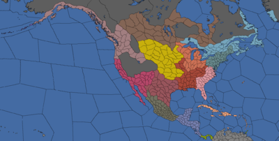

北美洲大陆（North American regions，北美洲各区域）和地区是北美洲的一部分。下表内容超出了 /Europa Universalis IV/history/provinces 文件的范围外，是游戏中1444年11月11日的数据。
注： 欧陆风云4中的大陆、次大陆、区域和地区并不完全与现实中相符。
| 目录 | |||
|---|---|---|---|
| 地图 | 区域 | 地区 | |
|  | 加利福尼亚 | 上加利福尼亚 • 阿帕奇利亚 • 亚利桑那 • 下加利福尼亚 • 中央谷地 • 科罗拉多高原 • 新墨西哥 • 北加利福尼亚 • 索诺拉 | |
| 加拿大 | 北海岸 • 格陵兰 • 休伦 • 拉布拉多 • 劳伦提亚 • 下阿卡迪亚 • 下加拿大 • 纽芬兰 • 魁北克 • 上阿卡迪亚 • 上加拿大 • 上安大略 | ||
| 加勒比 | 多米尼克 • 古巴东部 • 大安的列斯 • 海地 • 背风群岛 • 庐卡雅群岛 • 古巴西部 • 向风群岛 | ||
| 卡斯卡迪亚 | 阿拉斯加狭地 • 哥伦比亚河区 • 赫卡特海峡 • 内陆高原 • 俄勒冈 • 普吉特海湾 • 斯内克河区 • 乔治亚海峡 • 西阿拉斯加 | ||
| 中美洲 | 坎佩切 • 恰帕斯 • 哥斯达黎加 • 东尤卡坦 • 危地马拉 • 危地马拉低地 • 洪都拉斯 • 尼加拉瓜 • 西尤卡坦 | ||
| 五大湖区 | 伊利诺伊 • 印第安纳 • 苏必利尔湖区 • 密歇根 • 俄亥俄 • 威斯康星 | ||
| 大平原 | 巴德兰兹劣地 • 中央平原 • 达科他 • 高地平原 • 明尼苏达 • 欧扎克 • 南部平原 • 上密苏里 | ||
| 哈德逊湾 | 阿比提比 • 艾伯塔 • 阿西尼博亚 • 阿萨巴斯卡 • 哈德逊湾 • 詹姆斯湾 • 红河地区 • 萨斯喀彻温 | ||
| 墨西哥 | 杜兰戈 • 格兰奇奇梅克 • 瓜纳华托 • 格雷罗 • 瓦斯特克 • 哈利斯科 • 墨西哥_2 • 米却肯 • 米斯特克 • 纳亚里特 • 瓦哈卡 • 普埃布拉 • 铁拉卡连特 • 韦拉克鲁斯 • 萨卡特卡斯 | ||
| 密西西比 | 阿拉巴马 • 阿肯色 • 肯塔基 • 路易斯安纳 • 密西西比_2 • 高山区 • 田纳西 • 上路易斯安纳 • 万达利亚 • 西佛罗里达 | ||
| 北美东北 | 康涅狄格 • 特拉华谷 • 哈德逊河谷 • 易洛魁 • 尚普兰湖区 • 缅因 • 马里兰 • 马萨诸塞 • 新罕布什尔 • 威斯特西瓦尼亚 | ||
| 里奥格兰德 | 奇瓦瓦 • 科阿韦拉 • 埃斯塔卡多平原 • 佩科斯 • 塔毛利帕斯 • 德克萨斯 • 德克萨斯平原 | ||
| 北美东南 | 东佛罗里达 • 佛罗里达 • 佐治亚 • 大谷地 • 北卡罗来纳 • 皮埃蒙特 • 南卡罗来纳 • 上佐治亚 • 弗吉尼亚 | ||
| 哥伦比亚 | 巴拿马 | ||
加利福尼亚
上加利福尼亚
| ID | 名称 | 所有者（1444） | 宗教 | 文化 | 产品 | 贸易节点 | 永久性修正 | |||
|---|---|---|---|---|---|---|---|---|---|---|
| 868 | 2 | 2 | 1 | 加利福尼亚 | ||||||
| 869 | 1 | 2 | 1 | 加利福尼亚 | ||||||
| 2021 | 1 | 2 | 1 | 加利福尼亚 | ||||||
| 2476 | 3 | 2 | 1 | 加利福尼亚 | ||||||
| 4637 | 4 | 3 | 3 | 加利福尼亚 | 天然良港 |
阿帕奇利亚
| ID | 名称 | 所有者（1444） | 宗教 | 文化 | 产品 | 贸易节点 | 永久性修正 | |||
|---|---|---|---|---|---|---|---|---|---|---|
| 879 | 1 | 1 | 1 | 加利福尼亚 | ||||||
| 2492 | 1 | 1 | 1 | 加利福尼亚 | ||||||
| 4634 | 1 | 1 | 1 | 加利福尼亚 |
亚利桑那
| ID | 名称 | 所有者（1444） | 宗教 | 文化 | 产品 | 贸易节点 | 永久性修正 | |||
|---|---|---|---|---|---|---|---|---|---|---|
| 867 | 1 | 1 | 1 | 加利福尼亚 | ||||||
| 876 | 1 | 1 | 1 | 加利福尼亚 | ||||||
| 877 | 1 | 1 | 1 | 加利福尼亚 | ||||||
| 2491 | 1 | 1 | 1 | 加利福尼亚 | ||||||
| 4633 | 1 | 1 | 1 | 加利福尼亚 |
下加利福尼亚
| ID | 名称 | 所有者（1444） | 宗教 | 文化 | 产品 | 贸易节点 | 永久性修正 | |||
|---|---|---|---|---|---|---|---|---|---|---|
| 865 | 1 | 1 | 1 | 加利福尼亚 | ||||||
| 866 | 1 | 1 | 1 | 加利福尼亚 | ||||||
| 2620 | 1 | 1 | 1 | 加利福尼亚 | ||||||
| 4639 | 1 | 1 | 1 | 加利福尼亚 |
中央谷地
| ID | 名称 | 所有者（1444） | 宗教 | 文化 | 产品 | 贸易节点 | 永久性修正 | |||
|---|---|---|---|---|---|---|---|---|---|---|
| 870 | 1 | 1 | 1 | 加利福尼亚 | ||||||
| 2478 | 1 | 1 | 1 | 加利福尼亚 | ||||||
| 4635 | 1 | 1 | 1 | 加利福尼亚 | ||||||
| 4636 | 1 | 1 | 1 | 加利福尼亚 |
科罗拉多高原
| ID | 名称 | 所有者（1444） | 宗教 | 文化 | 产品 | 贸易节点 | 永久性修正 | |||
|---|---|---|---|---|---|---|---|---|---|---|
| 875 | 1 | 1 | 1 | 里奥格兰德 | ||||||
| 878 | 1 | 2 | 1 | 里奥格兰德 | ||||||
| 2493 | 1 | 1 | 1 | 里奥格兰德 | ||||||
| 2494 | 1 | 1 | 1 | 里奥格兰德 |
新墨西哥
| ID | 名称 | 所有者（1444） | 宗教 | 文化 | 产品 | 贸易节点 | 永久性修正 | |||
|---|---|---|---|---|---|---|---|---|---|---|
| 880 | 2 | 2 | 1 | 里奥格兰德 | 市场 | |||||
| 881 | 2 | 2 | 1 | 里奥格兰德 | ||||||
| 2495 | 2 | 2 | 1 | 里奥格兰德 | ||||||
| 4631 | 2 | 2 | 1 | 里奥格兰德 | ||||||
| 4632 | 2 | 2 | 1 | 里奥格兰德 |
北加利福尼亚
| ID | 名称 | 所有者（1444） | 宗教 | 文化 | 产品 | 贸易节点 | 永久性修正 | |||
|---|---|---|---|---|---|---|---|---|---|---|
| 871 | 1 | 1 | 1 | 加利福尼亚 | ||||||
| 2477 | 1 | 1 | 1 | 加利福尼亚 | ||||||
| 2479 | 1 | 1 | 1 | 加利福尼亚 | ||||||
| 2480 | 1 | 1 | 1 | 加利福尼亚 | ||||||
| 4638 | 1 | 1 | 1 | 加利福尼亚 |
索诺拉
| ID | 名称 | 所有者（1444） | 宗教 | 文化 | 产品 | 贸易节点 | 永久性修正 | |||
|---|---|---|---|---|---|---|---|---|---|---|
| 862 | 1 | 1 | 1 | 加利福尼亚 | ||||||
| 2616 | 1 | 1 | 1 | 加利福尼亚 | ||||||
| 4577 | 1 | 1 | 1 | 加利福尼亚 | ||||||
| 4649 | 1 | 1 | 1 | 加利福尼亚 | ||||||
| 4650 | 1 | 1 | 1 | 加利福尼亚 |
加拿大
北海岸
| ID | 名称 | 所有者（1444） | 宗教 | 文化 | 产品 | 贸易节点 | 永久性修正 | |||
|---|---|---|---|---|---|---|---|---|---|---|
| 996 | 1 | 1 | 1 | 圣劳伦斯湾 | ||||||
| 2576 | 1 | 1 | 1 | 圣劳伦斯湾 | ||||||
| 2577 | 1 | 1 | 1 | 圣劳伦斯湾 | ||||||
| 2578 | 1 | 1 | 1 | 圣劳伦斯湾 |
格陵兰
| ID | 名称 | 所有者（1444） | 宗教 | 文化 | 产品 | 贸易节点 | 永久性修正 | |||
|---|---|---|---|---|---|---|---|---|---|---|
| 1104 | 1 | 1 | 1 | 圣劳伦斯湾 | ||||||
| 1105 | 1 | 1 | 1 | 圣劳伦斯湾 |
休伦
| ID | 名称 | 所有者（1444） | 宗教 | 文化 | 产品 | 贸易节点 | 永久性修正 | |||
|---|---|---|---|---|---|---|---|---|---|---|
| 988 | 3 | 2 | 4 | 俄亥俄 | ||||||
| 2586 | 3 | 2 | 1 | 俄亥俄 | ||||||
| 2587 | 1 | 1 | 1 | 俄亥俄 | ||||||
| 2671 | 1 | 1 | 1 | 俄亥俄 |
拉布拉多
| ID | 名称 | 所有者（1444） | 宗教 | 文化 | 产品 | 贸易节点 | 永久性修正 | |||
|---|---|---|---|---|---|---|---|---|---|---|
| 997 | 1 | 1 | 1 | 圣劳伦斯湾 | ||||||
| 2574 | 1 | 1 | 1 | 圣劳伦斯湾 | ||||||
| 2575 | 1 | 1 | 1 | 圣劳伦斯湾 |
劳伦提亚
| ID | 名称 | 所有者（1444） | 宗教 | 文化 | 产品 | 贸易节点 | 永久性修正 | |||
|---|---|---|---|---|---|---|---|---|---|---|
| 992 | 1 | 1 | 1 | 圣劳伦斯湾 | ||||||
| 2579 | 1 | 1 | 1 | 圣劳伦斯湾 | ||||||
| 2580 | 1 | 1 | 1 | 圣劳伦斯湾 | ||||||
| 2581 | 1 | 1 | 1 | 圣劳伦斯湾 |
下阿卡迪亚
| ID | 名称 | 所有者（1444） | 宗教 | 文化 | 产品 | 贸易节点 | 永久性修正 | |||
|---|---|---|---|---|---|---|---|---|---|---|
| 982 | 1 | 1 | 1 | 圣劳伦斯湾 | ||||||
| 983 | 1 | 1 | 1 | 圣劳伦斯湾 | ||||||
| 984 | 1 | 1 | 1 | 圣劳伦斯湾 | ||||||
| 2568 | 3 | 2 | 1 | 圣劳伦斯湾 | ||||||
| 2569 | 1 | 1 | 1 | 圣劳伦斯湾 |
下加拿大
| ID | 名称 | 所有者（1444） | 宗教 | 文化 | 产品 | 贸易节点 | 永久性修正 | |||
|---|---|---|---|---|---|---|---|---|---|---|
| 990 | 1 | 1 | 1 | 圣劳伦斯湾 | ||||||
| 993 | 2 | 1 | 1 | 圣劳伦斯湾 | 市场 | |||||
| 2012 | 1 | 1 | 1 | 圣劳伦斯湾 | ||||||
| 2584 | 1 | 1 | 1 | 圣劳伦斯湾 |
纽芬兰
| ID | 名称 | 所有者（1444） | 宗教 | 文化 | 产品 | 贸易节点 | 永久性修正 | |||
|---|---|---|---|---|---|---|---|---|---|---|
| 980 | 1 | 1 | 1 | 圣劳伦斯湾 | ||||||
| 981 | 1 | 1 | 1 | 圣劳伦斯湾 | ||||||
| 2573 | 1 | 1 | 1 | 圣劳伦斯湾 |
虽然纽芬兰有“未知”商品，但是它的权重使得它只能得到  鱼类（其它任何东西都被固定在0%）。
鱼类（其它任何东西都被固定在0%）。
魁北克
| ID | 名称 | 所有者（1444） | 宗教 | 文化 | 产品 | 贸易节点 | 永久性修正 | |||
|---|---|---|---|---|---|---|---|---|---|---|
| 986 | 1 | 1 | 1 | 圣劳伦斯湾 | ||||||
| 994 | 2 | 1 | 2 | 圣劳伦斯湾 | 圣劳伦斯河口 | |||||
| 995 | 1 | 1 | 1 | 圣劳伦斯湾 | ||||||
| 2582 | 1 | 1 | 1 | 圣劳伦斯湾 | ||||||
| 2583 | 1 | 1 | 1 | 圣劳伦斯湾 |
上阿卡迪亚
| ID | 名称 | 所有者（1444） | 宗教 | 文化 | 产品 | 贸易节点 | 永久性修正 | |||
|---|---|---|---|---|---|---|---|---|---|---|
| 985 | 1 | 1 | 1 | 圣劳伦斯湾 | ||||||
| 2570 | 1 | 1 | 1 | 圣劳伦斯湾 | ||||||
| 2571 | 1 | 1 | 1 | 圣劳伦斯湾 | ||||||
| 2572 | 1 | 1 | 1 | 圣劳伦斯湾 |
上加拿大
| ID | 名称 | 所有者（1444） | 宗教 | 文化 | 产品 | 贸易节点 | 永久性修正 | |||
|---|---|---|---|---|---|---|---|---|---|---|
| 987 | 3 | 2 | 2 | 俄亥俄 | ||||||
| 989 | 1 | 1 | 1 | 俄亥俄 | ||||||
| 2585 | 2 | 1 | 1 | 俄亥俄 | ||||||
| 2670 | 3 | 3 | 1 | 俄亥俄 |
上安大略
| ID | 名称 | 所有者（1444） | 宗教 | 文化 | 产品 | 贸易节点 | 永久性修正 | |||
|---|---|---|---|---|---|---|---|---|---|---|
| 991 | 1 | 1 | 1 | 俄亥俄 | ||||||
| 1001 | 1 | 1 | 1 | 俄亥俄 | ||||||
| 1007 | 1 | 1 | 1 | 俄亥俄 | ||||||
| 2015 | 1 | 1 | 1 | 俄亥俄 |
加勒比
多米尼克
| ID | 名称 | 所有者（1444） | 宗教 | 文化 | 产品 | 贸易节点 | 永久性修正 | |||
|---|---|---|---|---|---|---|---|---|---|---|
| 490 | 2 | 3 | 1 | 加勒比 | 天然良港 | |||||
| 2658 | 2 | 2 | 1 | 加勒比 | ||||||
| 2659 | 2 | 1 | 1 | 加勒比 | ||||||
| 4620 | 2 | 2 | 1 | 加勒比 | ||||||
| 4621 | 2 | 2 | 1 | 加勒比 |
古巴东部
| ID | 名称 | 所有者（1444） | 宗教 | 文化 | 产品 | 贸易节点 | 永久性修正 | |||
|---|---|---|---|---|---|---|---|---|---|---|
| 486 | 2 | 3 | 1 | 加勒比 | ||||||
| 2654 | 2 | 2 | 1 | 加勒比 | ||||||
| 2655 | 2 | 3 | 1 | 加勒比 | ||||||
| 2656 | 2 | 2 | 1 | 加勒比 |
大安的列斯
| ID | 名称 | 所有者（1444） | 宗教 | 文化 | 产品 | 贸易节点 | 永久性修正 | |||
|---|---|---|---|---|---|---|---|---|---|---|
| 481 | 2 | 2 | 1 | 加勒比 | ||||||
| 487 | 4 | 5 | 1 | 加勒比 | 天然良港 | |||||
| 491 | 3 | 3 | 1 | 加勒比 | 天然良港 | |||||
| 492 | 4 | 5 | 1 | 加勒比 | 天然良港 |
海地
| ID | 名称 | 所有者（1444） | 宗教 | 文化 | 产品 | 贸易节点 | 永久性修正 | |||
|---|---|---|---|---|---|---|---|---|---|---|
| 488 | 2 | 3 | 1 | 加勒比 | 天然良港 | |||||
| 489 | 2 | 2 | 1 | 加勒比 | ||||||
| 4618 | 2 | 2 | 1 | 加勒比 | ||||||
| 4619 | 2 | 2 | 1 | 加勒比 |
背风群岛
| ID | 名称 | 所有者（1444） | 宗教 | 文化 | 产品 | 贸易节点 | 永久性修正 | |||
|---|---|---|---|---|---|---|---|---|---|---|
| 493 | 4 | 4 | 1 | 加勒比 | ||||||
| 494 | 4 | 4 | 1 | 加勒比 | ||||||
| 495 | 4 | 5 | 1 | 加勒比 | ||||||
| 496 | 4 | 5 | 1 | 加勒比 | ||||||
| 1881 | 4 | 5 | 1 | 加勒比 |
庐卡雅群岛
| ID | 名称 | 所有者（1444） | 宗教 | 文化 | 产品 | 贸易节点 | 永久性修正 | |||
|---|---|---|---|---|---|---|---|---|---|---|
| 482 | 2 | 2 | 1 | 加勒比 | ||||||
| 483 | 3 | 3 | 1 | 加勒比 |
古巴西部
| ID | 名称 | 所有者（1444） | 宗教 | 文化 | 产品 | 贸易节点 | 永久性修正 | |||
|---|---|---|---|---|---|---|---|---|---|---|
| 484 | 5 | 5 | 1 | 加勒比 | 天然良港 | |||||
| 485 | 2 | 3 | 1 | 加勒比 | ||||||
| 4622 | 2 | 3 | 1 | 加勒比 | ||||||
| 4623 | 2 | 3 | 1 | 加勒比 | ||||||
| 4624 | 2 | 3 | 1 | 加勒比 |
向风群岛
| ID | 名称 | 所有者（1444） | 宗教 | 文化 | 产品 | 贸易节点 | 永久性修正 | |||
|---|---|---|---|---|---|---|---|---|---|---|
| 497 | 4 | 5 | 1 | 加勒比 | ||||||
| 498 | 4 | 5 | 1 | 加勒比 | ||||||
| 499 | 4 | 5 | 1 | 加勒比 | ||||||
| 500 | 4 | 5 | 1 | 加勒比 | ||||||
| 501 | 4 | 5 | 1 | 加勒比 |
卡斯卡迪亚
阿拉斯加狭地
| ID | 名称 | 所有者（1444） | 宗教 | 文化 | 产品 | 贸易节点 | 永久性修正 | |||
|---|---|---|---|---|---|---|---|---|---|---|
| 976 | 1 | 1 | 1 | 加利福尼亚 | ||||||
| 977 | 1 | 1 | 1 | 加利福尼亚 | ||||||
| 2613 | 1 | 1 | 1 | 加利福尼亚 |
哥伦比亚河区
| ID | 名称 | 所有者（1444） | 宗教 | 文化 | 产品 | 贸易节点 | 永久性修正 | |||
|---|---|---|---|---|---|---|---|---|---|---|
| 873 | 3 | 1 | 1 | 加利福尼亚 | 哥伦比亚河河口 | |||||
| 2486 | 1 | 1 | 1 | 加利福尼亚 | ||||||
| 2487 | 1 | 1 | 1 | 加利福尼亚 | ||||||
| 2488 | 1 | 1 | 1 | 加利福尼亚 |
赫卡特海峡
| ID | 名称 | 所有者（1444） | 宗教 | 文化 | 产品 | 贸易节点 | 永久性修正 | |||
|---|---|---|---|---|---|---|---|---|---|---|
| 975 | 1 | 1 | 1 | 加利福尼亚 | ||||||
| 2022 | 1 | 1 | 1 | 加利福尼亚 | ||||||
| 2609 | 1 | 1 | 1 | 加利福尼亚 |
内陆高原
| ID | 名称 | 所有者（1444） | 宗教 | 文化 | 产品 | 贸易节点 | 永久性修正 | |||
|---|---|---|---|---|---|---|---|---|---|---|
| 2003 | 1 | 1 | 1 | 加利福尼亚 | ||||||
| 2604 | 1 | 1 | 1 | 加利福尼亚 | ||||||
| 2605 | 1 | 1 | 1 | 加利福尼亚 | ||||||
| 2606 | 1 | 1 | 1 | 加利福尼亚 | ||||||
| 2607 | 1 | 1 | 1 | 加利福尼亚 |
俄勒冈
| ID | 名称 | 所有者（1444） | 宗教 | 文化 | 产品 | 贸易节点 | 永久性修正 | |||
|---|---|---|---|---|---|---|---|---|---|---|
| 872 | 1 | 1 | 1 | 加利福尼亚 | ||||||
| 2481 | 1 | 1 | 1 | 加利福尼亚 | ||||||
| 2482 | 1 | 1 | 1 | 加利福尼亚 | ||||||
| 2483 | 1 | 1 | 1 | 加利福尼亚 |
普吉特海湾
| ID | 名称 | 所有者（1444） | 宗教 | 文化 | 产品 | 贸易节点 | 永久性修正 | |||
|---|---|---|---|---|---|---|---|---|---|---|
| 874 | 3 | 1 | 1 | 加利福尼亚 | ||||||
| 2484 | 1 | 1 | 1 | 加利福尼亚 | ||||||
| 2485 | 1 | 1 | 1 | 加利福尼亚 |
斯内克河区
| ID | 名称 | 所有者（1444） | 宗教 | 文化 | 产品 | 贸易节点 | 永久性修正 | |||
|---|---|---|---|---|---|---|---|---|---|---|
| 2019 | 1 | 1 | 1 | 加利福尼亚 | ||||||
| 2020 | 1 | 1 | 1 | 加利福尼亚 | ||||||
| 2489 | 1 | 1 | 1 | 加利福尼亚 | ||||||
| 2490 | 1 | 1 | 1 | 加利福尼亚 |
乔治亚海峡
| ID | 名称 | 所有者（1444） | 宗教 | 文化 | 产品 | 贸易节点 | 永久性修正 | |||
|---|---|---|---|---|---|---|---|---|---|---|
| 972 | 1 | 1 | 1 | 加利福尼亚 | ||||||
| 973 | 1 | 1 | 1 | 加利福尼亚 | ||||||
| 974 | 1 | 1 | 1 | 加利福尼亚 | ||||||
| 2610 | 1 | 1 | 1 | 加利福尼亚 |
西阿拉斯加
| ID | 名称 | 所有者（1444） | 宗教 | 文化 | 产品 | 贸易节点 | 永久性修正 | |||
|---|---|---|---|---|---|---|---|---|---|---|
| 978 | 1 | 1 | 1 | 加利福尼亚 | ||||||
| 2611 | 1 | 1 | 1 | 加利福尼亚 | ||||||
| 2612 | 1 | 1 | 1 | 加利福尼亚 |
中美洲
坎佩切
| ID | 名称 | 所有者（1444） | 宗教 | 文化 | 产品 | 贸易节点 | 永久性修正 | |||
|---|---|---|---|---|---|---|---|---|---|---|
| 845 | 4 | 4 | 1 | 墨西哥 | ||||||
| 2632 | 2 | 2 | 1 | 墨西哥 | ||||||
| 2650 | 3 | 3 | 1 | 墨西哥 |
恰帕斯
| ID | 名称 | 所有者（1444） | 宗教 | 文化 | 产品 | 贸易节点 | 永久性修正 | |||
|---|---|---|---|---|---|---|---|---|---|---|
| 2635 | 2 | 2 | 1 | 墨西哥 | ||||||
| 2638 | 3 | 3 | 1 | 墨西哥 | ||||||
| 2649 | 2 | 2 | 1 | 墨西哥 | ||||||
| 4585 | 2 | 2 | 1 | 墨西哥 | ||||||
| 4586 | 2 | 2 | 1 | 墨西哥 |
哥斯达黎加
| ID | 名称 | 所有者（1444） | 宗教 | 文化 | 产品 | 贸易节点 | 永久性修正 | |||
|---|---|---|---|---|---|---|---|---|---|---|
| 836 | 1 | 1 | 1 | 巴拿马 | ||||||
| 2663 | 1 | 1 | 1 | 巴拿马 | ||||||
| 4597 | 1 | 1 | 1 | 巴拿马 |
东尤卡坦
| ID | 名称 | 所有者（1444） | 宗教 | 文化 | 产品 | 贸易节点 | 永久性修正 | |||
|---|---|---|---|---|---|---|---|---|---|---|
| 2634 | 3 | 3 | 1 | 墨西哥 | ||||||
| 2652 | 3 | 3 | 1 | 墨西哥 | ||||||
| 4588 | 2 | 2 | 1 | 墨西哥 | ||||||
| 4591 | 4 | 4 | 1 | 墨西哥 |
危地马拉
| ID | 名称 | 所有者（1444） | 宗教 | 文化 | 产品 | 贸易节点 | 永久性修正 | |||
|---|---|---|---|---|---|---|---|---|---|---|
| 839 | 1 | 1 | 1 | 巴拿马 | ||||||
| 841 | 3 | 3 | 1 | 墨西哥 | ||||||
| 2653 | 3 | 3 | 1 | 墨西哥 | ||||||
| 4587 | 3 | 3 | 1 | 墨西哥 |
危地马拉低地
| ID | 名称 | 所有者（1444） | 宗教 | 文化 | 产品 | 贸易节点 | 永久性修正 | |||
|---|---|---|---|---|---|---|---|---|---|---|
| 842 | 2 | 2 | 1 | 墨西哥 | ||||||
| 843 | 4 | 4 | 1 | 墨西哥 | ||||||
| 2636 | 2 | 2 | 1 | 墨西哥 | ||||||
| 4589 | 2 | 2 | 1 | 墨西哥 | ||||||
| 4594 | 2 | 2 | 1 | 墨西哥 |
洪都拉斯
| ID | 名称 | 所有者（1444） | 宗教 | 文化 | 产品 | 贸易节点 | 永久性修正 | |||
|---|---|---|---|---|---|---|---|---|---|---|
| 840 | 1 | 1 | 1 | 巴拿马 | ||||||
| 2637 | 1 | 1 | 1 | 巴拿马 | ||||||
| 2640 | 1 | 1 | 1 | 巴拿马 | ||||||
| 2662 | 1 | 1 | 1 | 巴拿马 | ||||||
| 4593 | 1 | 1 | 1 | 巴拿马 |
尼加拉瓜
| ID | 名称 | 所有者（1444） | 宗教 | 文化 | 产品 | 贸易节点 | 永久性修正 | |||
|---|---|---|---|---|---|---|---|---|---|---|
| 837 | 1 | 1 | 1 | 巴拿马 | ||||||
| 838 | 1 | 1 | 1 | 巴拿马 | ||||||
| 2660 | 1 | 1 | 1 | 巴拿马 | ||||||
| 2661 | 1 | 1 | 1 | 巴拿马 | ||||||
| 4592 | 1 | 1 | 1 | 巴拿马 |
西尤卡坦
| ID | 名称 | 所有者（1444） | 宗教 | 文化 | 产品 | 贸易节点 | 永久性修正 | |||
|---|---|---|---|---|---|---|---|---|---|---|
| 846 | 4 | 4 | 1 | 墨西哥 | ||||||
| 2633 | 4 | 4 | 1 | 墨西哥 | ||||||
| 2651 | 3 | 3 | 1 | 墨西哥 | ||||||
| 4590 | 4 | 4 | 1 | 墨西哥 |
五大湖区
伊利诺伊
| ID | 名称 | 所有者（1444） | 宗教 | 文化 | 产品 | 贸易节点 | 永久性修正 | |||
|---|---|---|---|---|---|---|---|---|---|---|
| 915 | 2 | 1 | 1 | 俄亥俄 | ||||||
| 916 | 1 | 1 | 1 | 俄亥俄 | ||||||
| 917 | 1 | 1 | 1 | 俄亥俄 | ||||||
| 2519 | 1 | 1 | 1 | 俄亥俄 | ||||||
| 2520 | 1 | 1 | 1 | 俄亥俄 |
苏必利尔湖区
| ID | 名称 | 所有者（1444） | 宗教 | 文化 | 产品 | 贸易节点 | 永久性修正 | |||
|---|---|---|---|---|---|---|---|---|---|---|
| 910 | 1 | 1 | 1 | 俄亥俄 | ||||||
| 911 | 2 | 1 | 1 | 俄亥俄 | ||||||
| 2517 | 1 | 1 | 1 | 俄亥俄 | ||||||
| 2518 | 1 | 1 | 1 | 俄亥俄 |
印第安纳
| ID | 名称 | 所有者（1444） | 宗教 | 文化 | 产品 | 贸易节点 | 永久性修正 | |||
|---|---|---|---|---|---|---|---|---|---|---|
| 942 | 1 | 1 | 1 | 俄亥俄 | ||||||
| 943 | 1 | 1 | 1 | 俄亥俄 | ||||||
| 2523 | 1 | 1 | 1 | 俄亥俄 | ||||||
| 2524 | 1 | 1 | 1 | 俄亥俄 |
密歇根
| ID | 名称 | 所有者（1444） | 宗教 | 文化 | 产品 | 贸易节点 | 永久性修正 | |||
|---|---|---|---|---|---|---|---|---|---|---|
| 944 | 3 | 2 | 1 | 俄亥俄 | 市镇 | |||||
| 945 | 3 | 2 | 1 | 俄亥俄 | ||||||
| 2521 | 1 | 1 | 1 | 俄亥俄 | ||||||
| 2522 | 1 | 1 | 1 | 俄亥俄 |
俄亥俄
| ID | 名称 | 所有者（1444） | 宗教 | 文化 | 产品 | 贸易节点 | 永久性修正 | |||
|---|---|---|---|---|---|---|---|---|---|---|
| 946 | 1 | 1 | 1 | 俄亥俄 | ||||||
| 947 | 1 | 1 | 2 | 俄亥俄 | ||||||
| 948 | 1 | 1 | 1 | 俄亥俄 | ||||||
| 2525 | 1 | 1 | 1 | 俄亥俄 |
威斯康星
| ID | 名称 | 所有者（1444） | 宗教 | 文化 | 产品 | 贸易节点 | 永久性修正 | |||
|---|---|---|---|---|---|---|---|---|---|---|
| 912 | 1 | 1 | 1 | 俄亥俄 | ||||||
| 913 | 1 | 1 | 1 | 俄亥俄 | ||||||
| 914 | 1 | 1 | 1 | 俄亥俄 |
大平原
巴德兰兹劣地
| ID | 名称 | 所有者（1444） | 宗教 | 文化 | 产品 | 贸易节点 | 永久性修正 | |||
|---|---|---|---|---|---|---|---|---|---|---|
| 1809 | 1 | 1 | 1 | 密西西比河 | ||||||
| 2008 | 1 | 1 | 1 | 密西西比河 | ||||||
| 2009 | 1 | 1 | 1 | 密西西比河 | ||||||
| 2504 | 1 | 1 | 1 | 密西西比河 | ||||||
| 2505 | 1 | 1 | 1 | 密西西比河 |
中央平原
| ID | 名称 | 所有者（1444） | 宗教 | 文化 | 产品 | 贸易节点 | 永久性修正 | |||
|---|---|---|---|---|---|---|---|---|---|---|
| 898 | 1 | 1 | 1 | 密西西比河 | ||||||
| 901 | 2 | 1 | 1 | 密西西比河 | ||||||
| 903 | 1 | 1 | 1 | 密西西比河 | ||||||
| 2508 | 1 | 1 | 1 | 密西西比河 | ||||||
| 2672 | 1 | 1 | 1 | 密西西比河 |
达科他
| ID | 名称 | 所有者（1444） | 宗教 | 文化 | 产品 | 贸易节点 | 永久性修正 | |||
|---|---|---|---|---|---|---|---|---|---|---|
| 905 | 1 | 1 | 1 | 密西西比河 | ||||||
| 906 | 1 | 1 | 1 | 密西西比河 | ||||||
| 907 | 1 | 1 | 1 | 密西西比河 | ||||||
| 909 | 1 | 1 | 1 | 密西西比河 | ||||||
| 2007 | 1 | 1 | 1 | 密西西比河 |
高地平原
| ID | 名称 | 所有者（1444） | 宗教 | 文化 | 产品 | 贸易节点 | 永久性修正 | |||
|---|---|---|---|---|---|---|---|---|---|---|
| 889 | 1 | 1 | 1 | 密西西比河 | ||||||
| 890 | 1 | 1 | 1 | 密西西比河 | ||||||
| 2506 | 1 | 1 | 1 | 密西西比河 | ||||||
| 2507 | 1 | 1 | 1 | 密西西比河 | ||||||
| 2625 | 1 | 1 | 1 | 密西西比河 |
明尼苏达
| ID | 名称 | 所有者（1444） | 宗教 | 文化 | 产品 | 贸易节点 | 永久性修正 | |||
|---|---|---|---|---|---|---|---|---|---|---|
| 904 | 1 | 1 | 1 | 密西西比河 | ||||||
| 908 | 1 | 1 | 1 | 密西西比河 | ||||||
| 2512 | 1 | 1 | 1 | 密西西比河 |
欧扎克
| ID | 名称 | 所有者（1444） | 宗教 | 文化 | 产品 | 贸易节点 | 永久性修正 | |||
|---|---|---|---|---|---|---|---|---|---|---|
| 899 | 1 | 1 | 1 | 密西西比河 | ||||||
| 2509 | 1 | 1 | 1 | 密西西比河 | ||||||
| 2515 | 1 | 1 | 1 | 密西西比河 |
南部平原
| ID | 名称 | 所有者（1444） | 宗教 | 文化 | 产品 | 贸易节点 | 永久性修正 | |||
|---|---|---|---|---|---|---|---|---|---|---|
| 891 | 1 | 1 | 1 | 密西西比河 | ||||||
| 892 | 1 | 1 | 1 | 密西西比河 | ||||||
| 896 | 1 | 1 | 1 | 密西西比河 |
上密苏里
| ID | 名称 | 所有者（1444） | 宗教 | 文化 | 产品 | 贸易节点 | 永久性修正 | |||
|---|---|---|---|---|---|---|---|---|---|---|
| 2006 | 1 | 1 | 1 | 哈德逊湾 | ||||||
| 2501 | 1 | 1 | 1 | 哈德逊湾 | ||||||
| 2502 | 1 | 1 | 1 | 哈德逊湾 | ||||||
| 2503 | 1 | 1 | 1 | 哈德逊湾 | ||||||
| 2510 | 1 | 1 | 1 | 哈德逊湾 |
哈德逊湾
阿比提比
| ID | 名称 | 所有者（1444） | 宗教 | 文化 | 产品 | 贸易节点 | 永久性修正 | |||
|---|---|---|---|---|---|---|---|---|---|---|
| 1002 | 1 | 1 | 1 | 哈德逊湾 | ||||||
| 2588 | 1 | 1 | 1 | 哈德逊湾 | ||||||
| 2589 | 1 | 1 | 1 | 哈德逊湾 | ||||||
| 2590 | 1 | 1 | 1 | 哈德逊湾 | ||||||
| 2591 | 1 | 1 | 1 | 哈德逊湾 |
艾伯塔
| ID | 名称 | 所有者（1444） | 宗教 | 文化 | 产品 | 贸易节点 | 永久性修正 | |||
|---|---|---|---|---|---|---|---|---|---|---|
| 2004 | 1 | 1 | 1 | 哈德逊湾 | ||||||
| 2017 | 1 | 1 | 1 | 哈德逊湾 | ||||||
| 2018 | 1 | 1 | 1 | 哈德逊湾 | ||||||
| 2602 | 1 | 1 | 1 | 哈德逊湾 |
阿西尼博亚
| ID | 名称 | 所有者（1444） | 宗教 | 文化 | 产品 | 贸易节点 | 永久性修正 | |||
|---|---|---|---|---|---|---|---|---|---|---|
| 2005 | 1 | 1 | 1 | 哈德逊湾 | ||||||
| 2596 | 1 | 1 | 1 | 哈德逊湾 | ||||||
| 2598 | 1 | 1 | 1 | 哈德逊湾 |
阿萨巴斯卡
| ID | 名称 | 所有者（1444） | 宗教 | 文化 | 产品 | 贸易节点 | 永久性修正 | |||
|---|---|---|---|---|---|---|---|---|---|---|
| 2595 | 1 | 1 | 1 | 哈德逊湾 | ||||||
| 2599 | 1 | 1 | 1 | 哈德逊湾 | ||||||
| 2600 | 1 | 1 | 1 | 哈德逊湾 | ||||||
| 2601 | 1 | 1 | 1 | 哈德逊湾 | ||||||
| 2603 | 1 | 1 | 1 | 哈德逊湾 |
哈德逊湾
| ID | 名称 | 所有者（1444） | 宗教 | 文化 | 产品 | 贸易节点 | 永久性修正 | |||
|---|---|---|---|---|---|---|---|---|---|---|
| 1005 | 1 | 1 | 1 | 哈德逊湾 | 纳尔逊河口 | |||||
| 1006 | 1 | 1 | 1 | 哈德逊湾 | ||||||
| 1009 | 1 | 1 | 1 | 哈德逊湾 | ||||||
| 2592 | 1 | 1 | 1 | 哈德逊湾 | ||||||
| 2594 | 1 | 1 | 1 | 哈德逊湾 |
詹姆斯湾
| ID | 名称 | 所有者（1444） | 宗教 | 文化 | 产品 | 贸易节点 | 永久性修正 | |||
|---|---|---|---|---|---|---|---|---|---|---|
| 998 | 1 | 1 | 1 | 哈德逊湾 | ||||||
| 999 | 1 | 1 | 1 | 哈德逊湾 | ||||||
| 1000 | 1 | 1 | 1 | 哈德逊湾 | ||||||
| 1003 | 1 | 1 | 1 | 哈德逊湾 | ||||||
| 1004 | 1 | 1 | 1 | 哈德逊湾 |
红河地区
| ID | 名称 | 所有者（1444） | 宗教 | 文化 | 产品 | 贸易节点 | 永久性修正 | |||
|---|---|---|---|---|---|---|---|---|---|---|
| 1008 | 1 | 1 | 1 | 哈德逊湾 | 市场 | |||||
| 1010 | 1 | 1 | 1 | 哈德逊湾 | ||||||
| 2016 | 1 | 1 | 1 | 哈德逊湾 | ||||||
| 2511 | 1 | 1 | 1 | 哈德逊湾 | ||||||
| 2593 | 1 | 1 | 1 | 哈德逊湾 |
萨斯喀彻温
| ID | 名称 | 所有者（1444） | 宗教 | 文化 | 产品 | 贸易节点 | 永久性修正 | |||
|---|---|---|---|---|---|---|---|---|---|---|
| 1011 | 1 | 1 | 1 | 哈德逊湾 | ||||||
| 1813 | 1 | 1 | 1 | 哈德逊湾 | ||||||
| 2597 | 1 | 1 | 1 | 哈德逊湾 |
墨西哥
杜兰戈
| ID | 名称 | 所有者（1444） | 宗教 | 文化 | 产品 | 贸易节点 | 永久性修正 | |||
|---|---|---|---|---|---|---|---|---|---|---|
| 860 | 1 | 1 | 1 | 加利福尼亚 | ||||||
| 4646 | 1 | 1 | 1 | 加利福尼亚 | ||||||
| 4647 | 1 | 1 | 1 | 加利福尼亚 | ||||||
| 4648 | 1 | 1 | 1 | 加利福尼亚 |
瓜纳华托
| ID | 名称 | 所有者（1444） | 宗教 | 文化 | 产品 | 贸易节点 | 永久性修正 | |||
|---|---|---|---|---|---|---|---|---|---|---|
| 853 | 3 | 3 | 1 | 墨西哥 | ||||||
| 2615 | 1 | 1 | 1 | 墨西哥 | ||||||
| 4640 | 1 | 1 | 1 | 墨西哥 | ||||||
| 4641 | 1 | 1 | 1 | 墨西哥 |
格兰奇奇梅克
| ID | 名称 | 所有者（1444） | 宗教 | 文化 | 产品 | 贸易节点 | 永久性修正 | |||
|---|---|---|---|---|---|---|---|---|---|---|
| 857 | 1 | 1 | 1 | 墨西哥 | ||||||
| 2642 | 1 | 1 | 1 | 墨西哥 | ||||||
| 4642 | 1 | 1 | 1 | 墨西哥 |
格雷罗
| ID | 名称 | 所有者（1444） | 宗教 | 文化 | 产品 | 贸易节点 | 永久性修正 | |||
|---|---|---|---|---|---|---|---|---|---|---|
| 2627 | 2 | 2 | 1 | 墨西哥 | ||||||
| 2645 | 2 | 2 | 1 | 墨西哥 | ||||||
| 2648 | 3 | 3 | 1 | 墨西哥 |
瓦斯特克
| ID | 名称 | 所有者（1444） | 宗教 | 文化 | 产品 | 贸易节点 | 永久性修正 | |||
|---|---|---|---|---|---|---|---|---|---|---|
| 848 | 2 | 2 | 1 | 墨西哥 | ||||||
| 2641 | 1 | 1 | 1 | 墨西哥 | ||||||
| 4598 | 2 | 2 | 1 | 墨西哥 |
哈利斯科
| ID | 名称 | 所有者（1444） | 宗教 | 文化 | 产品 | 贸易节点 | 永久性修正 | |||
|---|---|---|---|---|---|---|---|---|---|---|
| 854 | 4 | 4 | 3 | 墨西哥 | 天然良港 | |||||
| 2617 | 1 | 1 | 1 | 墨西哥 | ||||||
| 2621 | 3 | 3 | 1 | 墨西哥 | ||||||
| 2657 | 4 | 4 | 1 | 墨西哥 | ||||||
| 4576 | 1 | 1 | 1 | 墨西哥 |
墨西哥
| ID | 名称 | 所有者（1444） | 宗教 | 文化 | 产品 | 贸易节点 | 永久性修正 | |||
|---|---|---|---|---|---|---|---|---|---|---|
| 852 | 7 | 7 | 2 | 墨西哥 | 市场 | |||||
| 2626 | 3 | 3 | 1 | 墨西哥 | ||||||
| 4570 | 5 | 5 | 2 | 墨西哥 | ||||||
| 4571 | 5 | 5 | 2 | 墨西哥 | ||||||
| 4572 | 3 | 3 | 1 | 墨西哥 |
米斯特克
| ID | 名称 | 所有者（1444） | 宗教 | 文化 | 产品 | 贸易节点 | 永久性修正 | |||
|---|---|---|---|---|---|---|---|---|---|---|
| 847 | 3 | 3 | 1 | 墨西哥 | ||||||
| 849 | 4 | 4 | 1 | 墨西哥 | 天然良港 | |||||
| 2646 | 3 | 3 | 1 | 墨西哥 | ||||||
| 4581 | 3 | 3 | 1 | 墨西哥 |
米却肯
| ID | 名称 | 所有者（1444） | 宗教 | 文化 | 产品 | 贸易节点 | 永久性修正 | |||
|---|---|---|---|---|---|---|---|---|---|---|
| 2622 | 3 | 3 | 1 | 墨西哥 | ||||||
| 2623 | 3 | 3 | 1 | 墨西哥 | ||||||
| 2624 | 4 | 4 | 1 | 墨西哥 | ||||||
| 4573 | 1 | 1 | 1 | 墨西哥 | ||||||
| 4574 | 3 | 3 | 1 | 墨西哥 |
纳亚里特
| ID | 名称 | 所有者（1444） | 宗教 | 文化 | 产品 | 贸易节点 | 永久性修正 | |||
|---|---|---|---|---|---|---|---|---|---|---|
| 855 | 2 | 1 | 1 | 加利福尼亚 | ||||||
| 859 | 1 | 1 | 1 | 加利福尼亚 | ||||||
| 4578 | 1 | 1 | 1 | 加利福尼亚 |
瓦哈卡
| ID | 名称 | 所有者（1444） | 宗教 | 文化 | 产品 | 贸易节点 | 永久性修正 | |||
|---|---|---|---|---|---|---|---|---|---|---|
| 844 | 2 | 2 | 1 | 墨西哥 | ||||||
| 2629 | 2 | 2 | 1 | 墨西哥 | ||||||
| 4584 | 2 | 2 | 1 | 墨西哥 |
普埃布拉
| ID | 名称 | 所有者（1444） | 宗教 | 文化 | 产品 | 贸易节点 | 永久性修正 | |||
|---|---|---|---|---|---|---|---|---|---|---|
| 850 | 4 | 4 | 1 | 墨西哥 | ||||||
| 2628 | 2 | 2 | 1 | 墨西哥 | ||||||
| 2644 | 4 | 4 | 1 | 墨西哥 | 乔卢拉神庙 | |||||
| 4582 | 3 | 3 | 1 | 墨西哥 | ||||||
| 4583 | 4 | 4 | 1 | 墨西哥 |
铁拉卡连特
| ID | 名称 | 所有者（1444） | 宗教 | 文化 | 产品 | 贸易节点 | 永久性修正 | |||
|---|---|---|---|---|---|---|---|---|---|---|
| 851 | 3 | 3 | 1 | 墨西哥 | ||||||
| 2643 | 2 | 2 | 1 | 墨西哥 | ||||||
| 4575 | 3 | 3 | 1 | 墨西哥 | ||||||
| 4579 | 4 | 4 | 1 | 墨西哥 | ||||||
| 4580 | 4 | 4 | 1 | 墨西哥 |
韦拉克鲁斯
| ID | 名称 | 所有者（1444） | 宗教 | 文化 | 产品 | 贸易节点 | 永久性修正 | |||
|---|---|---|---|---|---|---|---|---|---|---|
| 2630 | 2 | 2 | 1 | 墨西哥 | ||||||
| 2631 | 2 | 2 | 1 | 墨西哥 | ||||||
| 2647 | 2 | 2 | 1 | 墨西哥 | 中转港 |
萨卡特卡斯
| ID | 名称 | 所有者（1444） | 宗教 | 文化 | 产品 | 贸易节点 | 永久性修正 | |||
|---|---|---|---|---|---|---|---|---|---|---|
| 856 | 1 | 1 | 1 | 墨西哥 | ||||||
| 4643 | 1 | 1 | 1 | 墨西哥 | ||||||
| 4645 | 1 | 1 | 1 | 墨西哥 |
密西西比
阿拉巴马
| ID | 名称 | 所有者（1444） | 宗教 | 文化 | 产品 | 贸易节点 | 永久性修正 | |||
|---|---|---|---|---|---|---|---|---|---|---|
| 924 | 1 | 1 | 1 | 密西西比河 | ||||||
| 925 | 2 | 1 | 2 | 密西西比河 | ||||||
| 2531 | 1 | 1 | 1 | 密西西比河 | ||||||
| 2532 | 1 | 1 | 1 | 密西西比河 |
阿肯色
| ID | 名称 | 所有者（1444） | 宗教 | 文化 | 产品 | 贸易节点 | 永久性修正 | |||
|---|---|---|---|---|---|---|---|---|---|---|
| 894 | 1 | 1 | 1 | 密西西比河 | ||||||
| 895 | 1 | 1 | 1 | 密西西比河 | ||||||
| 897 | 1 | 1 | 1 | 密西西比河 |
肯塔基
| ID | 名称 | 所有者（1444） | 宗教 | 文化 | 产品 | 贸易节点 | 永久性修正 | |||
|---|---|---|---|---|---|---|---|---|---|---|
| 939 | 1 | 1 | 1 | 俄亥俄 | ||||||
| 940 | 1 | 1 | 1 | 俄亥俄 | ||||||
| 941 | 1 | 1 | 1 | 俄亥俄 |
路易斯安纳
| ID | 名称 | 所有者（1444） | 宗教 | 文化 | 产品 | 贸易节点 | 永久性修正 | |||
|---|---|---|---|---|---|---|---|---|---|---|
| 893 | 2 | 1 | 1 | 密西西比河 | 密西西比河河口，天然良港 | |||||
| 2014 | 1 | 1 | 1 | 密西西比河 | ||||||
| 2516 | 1 | 1 | 1 | 密西西比河 |
密西西比
| ID | 名称 | 所有者（1444） | 宗教 | 文化 | 产品 | 贸易节点 | 永久性修正 | |||
|---|---|---|---|---|---|---|---|---|---|---|
| 919 | 2 | 1 | 1 | 密西西比河 | ||||||
| 920 | 2 | 1 | 1 | 密西西比河 | ||||||
| 2528 | 1 | 1 | 1 | 密西西比河 | ||||||
| 2529 | 1 | 1 | 1 | 密西西比河 |
高山区
| ID | 名称 | 所有者（1444） | 宗教 | 文化 | 产品 | 贸易节点 | 永久性修正 | |||
|---|---|---|---|---|---|---|---|---|---|---|
| 935 | 3 | 2 | 1 | 切萨皮克湾 | ||||||
| 936 | 2 | 1 | 1 | 切萨皮克湾 | ||||||
| 2548 | 2 | 1 | 1 | 切萨皮克湾 |
田纳西
| ID | 名称 | 所有者（1444） | 宗教 | 文化 | 产品 | 贸易节点 | 永久性修正 | |||
|---|---|---|---|---|---|---|---|---|---|---|
| 918 | 1 | 1 | 1 | 密西西比河 | ||||||
| 934 | 1 | 1 | 1 | 密西西比河 | ||||||
| 2527 | 1 | 1 | 1 | 密西西比河 |
上路易斯安纳
| ID | 名称 | 所有者（1444） | 宗教 | 文化 | 产品 | 贸易节点 | 永久性修正 | |||
|---|---|---|---|---|---|---|---|---|---|---|
| 900 | 1 | 1 | 1 | 密西西比河 | 市场 | |||||
| 902 | 1 | 1 | 1 | 密西西比河 | ||||||
| 2513 | 1 | 1 | 1 | 密西西比河 | ||||||
| 2514 | 1 | 1 | 1 | 密西西比河 |
万达利亚
| ID | 名称 | 所有者（1444） | 宗教 | 文化 | 产品 | 贸易节点 | 永久性修正 | |||
|---|---|---|---|---|---|---|---|---|---|---|
| 951 | 1 | 1 | 1 | 俄亥俄 | ||||||
| 2526 | 1 | 1 | 1 | 俄亥俄 | ||||||
| 2551 | 1 | 1 | 1 | 俄亥俄 |
西佛罗里达
| ID | 名称 | 所有者（1444） | 宗教 | 文化 | 产品 | 贸易节点 | 永久性修正 | |||
|---|---|---|---|---|---|---|---|---|---|---|
| 921 | 1 | 1 | 1 | 密西西比河 | ||||||
| 922 | 1 | 1 | 1 | 密西西比河 | ||||||
| 923 | 1 | 1 | 1 | 密西西比河 | ||||||
| 2530 | 2 | 1 | 1 | 密西西比河 | ||||||
| 2533 | 1 | 1 | 1 | 密西西比河 |
北美东北
康涅狄格
| ID | 名称 | 所有者（1444） | 宗教 | 文化 | 产品 | 贸易节点 | 永久性修正 | |||
|---|---|---|---|---|---|---|---|---|---|---|
| 967 | 1 | 1 | 1 | 切萨皮克湾 | ||||||
| 2010 | 4 | 2 | 2 | 切萨皮克湾 | ||||||
| 2560 | 2 | 1 | 1 | 切萨皮克湾 |
特拉华谷
| ID | 名称 | 所有者（1444） | 宗教 | 文化 | 产品 | 贸易节点 | 永久性修正 | |||
|---|---|---|---|---|---|---|---|---|---|---|
| 955 | 2 | 2 | 2 | 切萨皮克湾 | ||||||
| 956 | 3 | 2 | 1 | 切萨皮克湾 | 特拉华河河口 | |||||
| 957 | 2 | 1 | 2 | 切萨皮克湾 | ||||||
| 962 | 1 | 1 | 1 | 切萨皮克湾 | ||||||
| 2023 | 1 | 1 | 1 | 切萨皮克湾 |
哈德逊河谷
| ID | 名称 | 所有者（1444） | 宗教 | 文化 | 产品 | 贸易节点 | 永久性修正 | |||
|---|---|---|---|---|---|---|---|---|---|---|
| 963 | 1 | 1 | 1 | 切萨皮克湾 | ||||||
| 965 | 2 | 1 | 1 | 切萨皮克湾 | 哈德逊河口 | |||||
| 2558 | 1 | 1 | 1 | 切萨皮克湾 | ||||||
| 2639 | 1 | 1 | 1 | 切萨皮克湾 |
易洛魁
| ID | 名称 | 所有者（1444） | 宗教 | 文化 | 产品 | 贸易节点 | 永久性修正 | |||
|---|---|---|---|---|---|---|---|---|---|---|
| 958 | 1 | 1 | 1 | 俄亥俄 | ||||||
| 959 | 2 | 2 | 1 | 俄亥俄 | ||||||
| 960 | 3 | 2 | 2 | 俄亥俄 | ||||||
| 961 | 2 | 2 | 1 | 俄亥俄 | ||||||
| 964 | 3 | 2 | 2 | 俄亥俄 |
尚普兰湖区
| ID | 名称 | 所有者（1444） | 宗教 | 文化 | 产品 | 贸易节点 | 永久性修正 | |||
|---|---|---|---|---|---|---|---|---|---|---|
| 969 | 2 | 2 | 4 | 圣劳伦斯湾 | ||||||
| 2559 | 1 | 1 | 1 | 圣劳伦斯湾 | ||||||
| 2563 | 1 | 1 | 1 | 圣劳伦斯湾 |
缅因
| ID | 名称 | 所有者（1444） | 宗教 | 文化 | 产品 | 贸易节点 | 永久性修正 | |||
|---|---|---|---|---|---|---|---|---|---|---|
| 971 | 3 | 2 | 2 | 圣劳伦斯湾 | ||||||
| 2013 | 1 | 1 | 1 | 圣劳伦斯湾 | ||||||
| 2565 | 1 | 1 | 1 | 圣劳伦斯湾 | ||||||
| 2566 | 1 | 1 | 1 | 圣劳伦斯湾 | ||||||
| 2567 | 1 | 1 | 1 | 圣劳伦斯湾 |
马里兰
| ID | 名称 | 所有者（1444） | 宗教 | 文化 | 产品 | 贸易节点 | 永久性修正 | |||
|---|---|---|---|---|---|---|---|---|---|---|
| 953 | 1 | 1 | 1 | 切萨皮克湾 | ||||||
| 2553 | 2 | 1 | 1 | 切萨皮克湾 | ||||||
| 2554 | 1 | 1 | 1 | 切萨皮克湾 |
马萨诸塞
| ID | 名称 | 所有者（1444） | 宗教 | 文化 | 产品 | 贸易节点 | 永久性修正 | |||
|---|---|---|---|---|---|---|---|---|---|---|
| 966 | 1 | 1 | 1 | 切萨皮克湾 | ||||||
| 968 | 1 | 1 | 1 | 切萨皮克湾 | 天然良港 | |||||
| 2561 | 2 | 1 | 1 | 切萨皮克湾 |
新罕布什尔
| ID | 名称 | 所有者（1444） | 宗教 | 文化 | 产品 | 贸易节点 | 永久性修正 | |||
|---|---|---|---|---|---|---|---|---|---|---|
| 970 | 1 | 1 | 1 | 切萨皮克湾 | ||||||
| 2562 | 2 | 1 | 1 | 切萨皮克湾 | ||||||
| 2564 | 1 | 1 | 1 | 切萨皮克湾 |
威斯特西瓦尼亚
| ID | 名称 | 所有者（1444） | 宗教 | 文化 | 产品 | 贸易节点 | 永久性修正 | |||
|---|---|---|---|---|---|---|---|---|---|---|
| 954 | 1 | 1 | 1 | 俄亥俄 | ||||||
| 2555 | 1 | 1 | 1 | 俄亥俄 | 市场 | |||||
| 2556 | 1 | 1 | 1 | 俄亥俄 | ||||||
| 2557 | 1 | 1 | 1 | 俄亥俄 |
里奥格兰德
奇瓦瓦
| ID | 名称 | 所有者（1444） | 宗教 | 文化 | 产品 | 贸易节点 | 永久性修正 | |||
|---|---|---|---|---|---|---|---|---|---|---|
| 863 | 1 | 1 | 1 | 里奥格兰德 | ||||||
| 864 | 1 | 1 | 1 | 里奥格兰德 | ||||||
| 2618 | 1 | 1 | 1 | 里奥格兰德 | ||||||
| 4644 | 1 | 1 | 1 | 里奥格兰德 |
科阿韦拉
| ID | 名称 | 所有者（1444） | 宗教 | 文化 | 产品 | 贸易节点 | 永久性修正 | |||
|---|---|---|---|---|---|---|---|---|---|---|
| 861 | 1 | 1 | 1 | 里奥格兰德 | ||||||
| 2619 | 1 | 1 | 1 | 里奥格兰德 | ||||||
| 2666 | 1 | 1 | 1 | 里奥格兰德 | ||||||
| 2667 | 1 | 1 | 1 | 里奥格兰德 | ||||||
| 4606 | 1 | 1 | 1 | 里奥格兰德 |
埃斯塔卡多平原
| ID | 名称 | 所有者（1444） | 宗教 | 文化 | 产品 | 贸易节点 | 永久性修正 | |||
|---|---|---|---|---|---|---|---|---|---|---|
| 882 | 1 | 1 | 1 | 里奥格兰德 | ||||||
| 885 | 1 | 1 | 1 | 里奥格兰德 | ||||||
| 2496 | 1 | 1 | 1 | 里奥格兰德 | ||||||
| 2497 | 1 | 1 | 1 | 里奥格兰德 | ||||||
| 4630 | 1 | 1 | 1 | 里奥格兰德 |
佩科斯
| ID | 名称 | 所有者（1444） | 宗教 | 文化 | 产品 | 贸易节点 | 永久性修正 | |||
|---|---|---|---|---|---|---|---|---|---|---|
| 2498 | 1 | 1 | 1 | 里奥格兰德 | ||||||
| 4628 | 1 | 1 | 1 | 里奥格兰德 | ||||||
| 4629 | 1 | 1 | 1 | 里奥格兰德 |
塔毛利帕斯
| ID | 名称 | 所有者（1444） | 宗教 | 文化 | 产品 | 贸易节点 | 永久性修正 | |||
|---|---|---|---|---|---|---|---|---|---|---|
| 858 | 1 | 1 | 1 | 里奥格兰德 | ||||||
| 2499 | 1 | 1 | 1 | 里奥格兰德 | 格兰德河河口 | |||||
| 2614 | 1 | 1 | 1 | 里奥格兰德 | ||||||
| 2668 | 1 | 1 | 1 | 里奥格兰德 |
德克萨斯
| ID | 名称 | 所有者（1444） | 宗教 | 文化 | 产品 | 贸易节点 | 永久性修正 | |||
|---|---|---|---|---|---|---|---|---|---|---|
| 884 | 1 | 1 | 1 | 里奥格兰德 | ||||||
| 887 | 1 | 1 | 1 | 里奥格兰德 | ||||||
| 888 | 1 | 1 | 1 | 里奥格兰德 | ||||||
| 2665 | 1 | 2 | 1 | 里奥格兰德 | ||||||
| 2669 | 1 | 1 | 1 | 里奥格兰德 |
德克萨斯平原
| ID | 名称 | 所有者（1444） | 宗教 | 文化 | 产品 | 贸易节点 | 永久性修正 | |||
|---|---|---|---|---|---|---|---|---|---|---|
| 883 | 1 | 1 | 1 | 里奥格兰德 | ||||||
| 886 | 1 | 1 | 1 | 里奥格兰德 | ||||||
| 2500 | 1 | 1 | 1 | 里奥格兰德 | ||||||
| 4627 | 1 | 1 | 1 | 里奥格兰德 |
北美东南
东佛罗里达
| ID | 名称 | 所有者（1444） | 宗教 | 文化 | 产品 | 贸易节点 | 永久性修正 | |||
|---|---|---|---|---|---|---|---|---|---|---|
| 927 | 1 | 1 | 1 | 加勒比 | ||||||
| 928 | 1 | 1 | 1 | 加勒比 | ||||||
| 2534 | 1 | 1 | 1 | 加勒比 |
佛罗里达
| ID | 名称 | 所有者（1444） | 宗教 | 文化 | 产品 | 贸易节点 | 永久性修正 | |||
|---|---|---|---|---|---|---|---|---|---|---|
| 926 | 1 | 1 | 1 | 加勒比 | ||||||
| 2535 | 1 | 1 | 1 | 加勒比 | ||||||
| 2536 | 1 | 1 | 1 | 加勒比 |
佐治亚
| ID | 名称 | 所有者（1444） | 宗教 | 文化 | 产品 | 贸易节点 | 永久性修正 | |||
|---|---|---|---|---|---|---|---|---|---|---|
| 929 | 2 | 1 | 1 | 切萨皮克湾 | ||||||
| 2539 | 1 | 1 | 1 | 切萨皮克湾 | ||||||
| 2540 | 1 | 1 | 1 | 切萨皮克湾 |
大谷地
| ID | 名称 | 所有者（1444） | 宗教 | 文化 | 产品 | 贸易节点 | 永久性修正 | |||
|---|---|---|---|---|---|---|---|---|---|---|
| 949 | 1 | 1 | 1 | 切萨皮克湾 | ||||||
| 2011 | 1 | 1 | 1 | 切萨皮克湾 | ||||||
| 2552 | 1 | 1 | 1 | 切萨皮克湾 |
北卡罗来纳
| ID | 名称 | 所有者（1444） | 宗教 | 文化 | 产品 | 贸易节点 | 永久性修正 | |||
|---|---|---|---|---|---|---|---|---|---|---|
| 938 | 1 | 1 | 1 | 切萨皮克湾 | ||||||
| 2546 | 1 | 1 | 1 | 切萨皮克湾 | ||||||
| 2547 | 1 | 1 | 1 | 切萨皮克湾 |
皮埃蒙特
| ID | 名称 | 所有者（1444） | 宗教 | 文化 | 产品 | 贸易节点 | 永久性修正 | |||
|---|---|---|---|---|---|---|---|---|---|---|
| 937 | 1 | 1 | 1 | 切萨皮克湾 | ||||||
| 2544 | 1 | 1 | 1 | 切萨皮克湾 | ||||||
| 2545 | 1 | 1 | 1 | 切萨皮克湾 |
南卡罗来纳
| ID | 名称 | 所有者（1444） | 宗教 | 文化 | 产品 | 贸易节点 | 永久性修正 | |||
|---|---|---|---|---|---|---|---|---|---|---|
| 932 | 2 | 1 | 1 | 切萨皮克湾 | 桑蒂河河口 | |||||
| 933 | 1 | 1 | 1 | 切萨皮克湾 | ||||||
| 2541 | 1 | 1 | 1 | 切萨皮克湾 | ||||||
| 2542 | 1 | 1 | 1 | 切萨皮克湾 | ||||||
| 2543 | 1 | 1 | 1 | 切萨皮克湾 |
上佐治亚
| ID | 名称 | 所有者（1444） | 宗教 | 文化 | 产品 | 贸易节点 | 永久性修正 | |||
|---|---|---|---|---|---|---|---|---|---|---|
| 930 | 2 | 2 | 1 | 切萨皮克湾 | ||||||
| 931 | 3 | 2 | 1 | 切萨皮克湾 | ||||||
| 2537 | 1 | 1 | 1 | 切萨皮克湾 | ||||||
| 2538 | 1 | 1 | 1 | 切萨皮克湾 |
弗吉尼亚
| ID | 名称 | 所有者（1444） | 宗教 | 文化 | 产品 | 贸易节点 | 永久性修正 | |||
|---|---|---|---|---|---|---|---|---|---|---|
| 950 | 1 | 1 | 1 | 切萨皮克湾 | 詹姆斯河河口 | |||||
| 952 | 3 | 2 | 1 | 切萨皮克湾 | ||||||
| 2549 | 1 | 1 | 1 | 切萨皮克湾 | ||||||
| 2550 | 1 | 1 | 1 | 切萨皮克湾 |
哥伦比亚
注意： 哥伦比亚 区域大部分属于南美洲。
巴拿马
| ID | 名称 | 所有者（1444） | 宗教 | 文化 | 产品 | 贸易节点 | 永久性修正 | |||
|---|---|---|---|---|---|---|---|---|---|---|
| 835 | 1 | 1 | 1 | 巴拿马 | 天然良港 | |||||
| 2664 | 1 | 1 | 1 | 巴拿马 | ||||||
| 2819 | 1 | 1 | 1 | 巴拿马 | ||||||
| 4595 | 1 | 1 | 1 | 巴拿马 |
省份